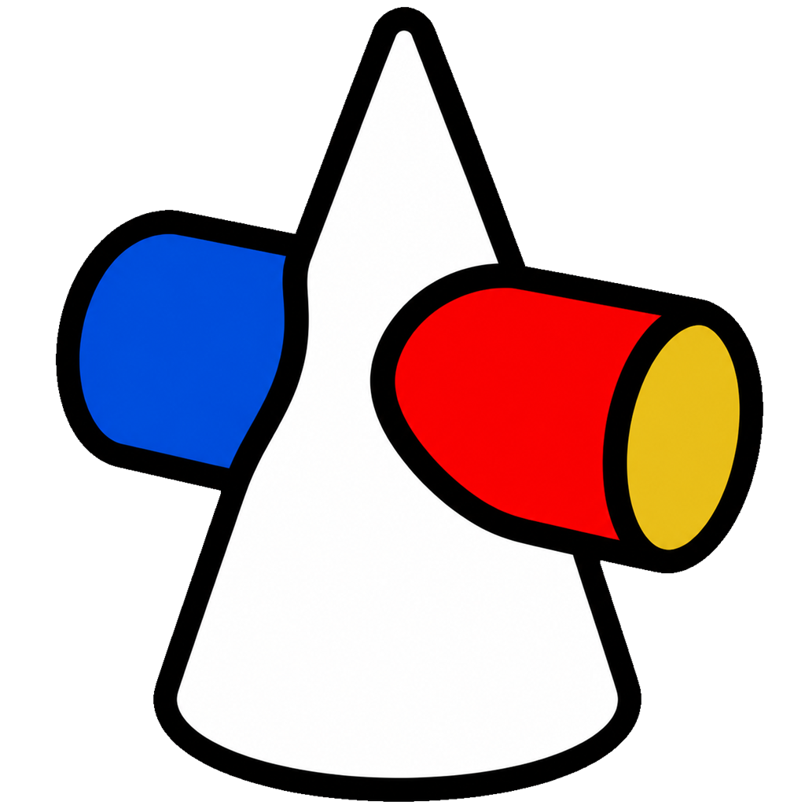

格式转换
批量将 HEIC、HEIF 和 WebP 图片转换为 PNG，并保持原始像素尺寸。

图片处理工具箱格式转换、自动裁剪、低像素清理、图片查重、调色、评分和批量命名集中在一个工具箱中。安装后即可在电脑本地使用。
面向图片筛选、整理和批处理工作设计，减少在多个软件之间反复切换。
批量将 HEIC、HEIF 和 WebP 图片转换为 PNG，并保持原始像素尺寸。
识别黑边、白边和多层相纸边框，批量输出裁剪后的图片。
扫描大型图片库中的低分辨率图片，辅助筛选、记录和安全清理。
同时检测完全重复和视觉相似的图片，帮助整理重复素材。
调整曝光、色温、HSL 和曲线，支持参考图匹配、预设与批量导出。
快速查看、评分和筛选图片，并根据评分结果整理文件名称。
按类别、分数、方向和编号统一生成文件名，执行前可先预览。
适用于 Windows 10 / 11。下载完成后运行安装程序，即可开始使用。
这是用于在 Mac 电脑上生成安装包的项目文件，不是双击即可安装的成品。需要先在 Mac 上安装 Node.js 和 Xcode 命令行工具，再按项目内说明完成打包。